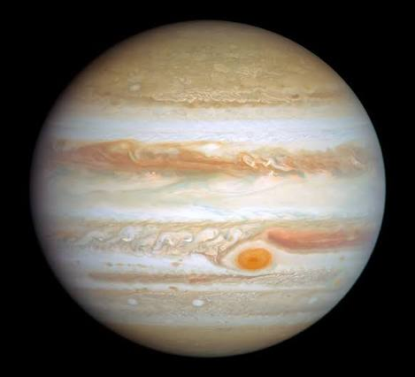

Giove (dal latino Iovem, accusativo di Iuppiter) è il quinto pianeta del sistema solare in ordine di distanza dal Sole e il più grande di tutto il sistema planetario: la sua massa corrisponde a due volte e mezzo la somma di quelle di tutti gli altri pianeti messi insieme.
È classificato, al pari di Saturno, Urano e Nettuno, come gigante gassoso (gli ultimi due si differenziano per essere classificati in tempi recenti come giganti ghiacciati).
Giove ha una composizione simile a quella del Sole: infatti è costituito principalmente da idrogeno ed elio con piccole quantità di altri gas composti, quali ammoniaca, metano e acqua. Si ritiene che il pianeta possegga una struttura pluristratificata, con un nucleo solido, presumibilmente di natura rocciosa e costituito da carbonio e silicati di ferro, sopra il quale gravano un mantello di idrogeno metallico e una vasta copertura atmosferica che esercitano su di esso altissime pressioni.